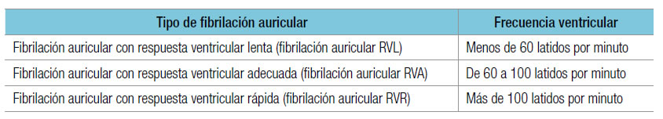

En las guías conjuntas de AHA/ACC/HRS del año 2014 se incluyen distintas categorías de fibrilación auricular y se aclara que un mismo paciente puede tener ambos tipos en distintos momentos de su evolución. Los tipos de fibrilación auricular que se incluyen en las guías son:
1. Paroxística: termina espontáneamente o con intervención terapéutica dentro de los 7 días del comienzo.
2. Persistente: dura más de 7 días.
3. Persistente de larga duración: dura más de 12 meses.
4. Permanente: resulta de una decisión conjunta adoptada por el paciente y el médico en el sentido de no hacer nuevos intentos para restaurar o mantener el ritmo sinusal.
5. No valvular: ocurre en ausencia de estenosis mitral reumática, prótesis valvular biológica o mecánica, o reparación de la válvula mitral.
Estas guías aclaran que más que reflejo de un sustrato fisiopatológico particular, la fibrilación auricular permanente es el resultado de una actitud terapéutica del paciente y el médico. Por otra parte, y a medida que evolucionen los síntomas, la eficacia de los tratamientos y las preferencias del paciente y del médico pueden variar la actitud de aceptación de la fibrilación auricular.
Se ha observado que la fibrilación auricular paroxística se transforma en persistente a lo largo de la evolución y se han propuesto puntajes, como el HATCH, que llega a los 7 puntos frente a los siguientes criterios: Hipertensión, edad mayor de 75 años, AIT o ACV previos, EPOC e insuficiencia cardíaca (heart failure). Aunque en la publicación original del puntaje HATCH se informó una progresión de fibrilación auricular paroxística a la variedad persistente o persistente de larga duración en la mitad de los individuos con un puntaje mayor de 5 y, en cambio, dicha progresión sólo se observó en 15% de quienes tenían un puntaje de 0, Barrett y cols. no confirmaron estos resultados en 253 pacientes asistidos en el departamento de emergencias.
En cuanto a los mecanismos, y en particular en la era de la ablación por catéter de la fibrilación auricular, no son iguales la fibrilación auricular paroxística y la persistente. Así, en 44 pacientes con la variedad paroxística (n: 25) o persistente (n: 19), Tada y cols. encontraron actividad eléctrica continua (despolarización continua durante más de un segundo sin intervalo isoeléctrico) en mayor cantidad de sitios no antrales en la variedad persistente (p = 0,03). Además, la duración media de la actividad eléctrica continua fue mayor en la fibrilación auricular persistente (p < 0,001). Esto es compatible con un predominio de los mecanismos reentrantes en la aurícula izquierda en los pacientes con fibrilación auricular persistente.
En cuanto a la eficacia de la ablación por catéter para modificar la progresión de la fibrilación auricular paroxística hacia las formas persistentes (lo que ocurre aproximadamente en la mitad de los pacientes bajo tratamiento farmacológico), Jongnarangsin y cols. siguieron a 504 pacientes (media de edad 58 ± 10 años) luego de la ablación. La progresión a fibrilación auricular persistente fue significativamente menor con la ablación por catéter en comparación con los antiarrítmicos (p < 0,001). Así, transcurridos 27 ± 12 meses luego del procedimiento, el 86% de los pacientes se encontraban con ritmo sinusal, el 9,5% seguían con fibrilación auricular paroxística y el 3% tenían aleteo auricular. Sólo 7 pacientes (1,5%) progresaron a fibrilación auricular persistente. La edad mayor de 75 años, la historia de fibrilación auricular mayor de 10 años y la diabetes fueron predictores independientes de la progresión a fibrilación auricular persistente, en tanto el puntaje HATCH no varió entre quienes progresaron a fibrilación auricular persistente y aquellos en quienes no ocurrió esaprogresión (0,7 ± 0,8 vs. 1 ± 0,5, p = 0,3).
La fibrilación auricular idiopática o solitaria (lone) se presenta en individuos más jóvenes, usualmente menores de 60 años, sin evidencias clínicas ni ecocardiográficas de cardiopatía y en ausencia de enfermedad pulmonar, diabetes o hipertensión arterial. Un 30 a 45% de los casos de fibrilación auricular paroxística y un 20 a 25% de los episodios de fibrilación auricular persistente corresponden a la variedad idiopática. Es importante destacar que la ausencia de cardiopatía estructural se vincula a la capacidad diagnóstica de los métodos actualmente disponibles. Además, la reiteración de episodios de fibrilación auricular en estos pacientes (y su eventual pasaje a la cronicidad tras una evolución prolongada del cuadro) va dando lugar a una fibrilación auricular con sustrato anatómico, lo que sería una forma de taquicardiomiopatía auricular inducida por taquicardia.
Si bien las guías 2014 de AHA/ACC/HRS no consideran que esté justificado hablar de la fibrilación auricular idiopática, creemos que se trata de una variedad con importantes implicaciones terapéuticas, ya que debería responder mejor que una fibrilación auricular con cardiopatía a la eliminación de desencadenantes.
La fibrilación auricular no valvular es aquella que se presenta en ausencia de valvulopatía mitral reumática o prótesis valvular cardíaca o valvulopatía mitral. Esta definición se usó con mucha frecuencia para designar a los pacientes que podrían beneficiarse con el uso de los nuevos anticoagulantes. Revisando los principales estudios de los nuevos anticoagulantes orales se observa, por ejemplo, en el estudio RE-LY, que no incluyó el término fibrilación auricular no valvular, pero se excluyeron los pacientes con enfermedad valvular hermodinámicamente relevante. El estudio ROCKET es el único que incluyó el término fibrilación auricular no valvular; sin embargo, el protocolo excluyó a los pacientes con una estenosis mitral hermodinámicamente significativa. En este protocolo, cualquier fibrilación auricular en un paciente con una lesión valvular diferente de la estenosis mitral no se consideró una fibrilación auricular valvular. Finalmente, los estudios ARISTOTLE y ENGAGE AF-TIMI no usaron el término fibrilación auricular valvular, pero en ambos se excluyeron únicamente los pacientes con estenosis mitral moderada o grave.
Sin embargo, a pesar de esta clasificación, no siempre es jerarquizada para definir la conducta más apropiada, ya que existe una dispersión de criterios que sería bueno homogeneizar: Primaria o secundaria: la distinción de fibrilación auricular secundaria tiene la ventaja para el médico de que si la causa es reversible disminuye el riesgo de recurrencia.
Gruesa o fina: esto se correlaciona con las ondas que se observan en el ECG. Cuanta más cronicidad tiene la fibrilación auricular más finas son las ondas que se observan en el ECG. Se ha propuesto también que quizá, cuanto más fina sean las ondas del ECG, mayor sea el grado de fibrosis auricular, pero esto aún no se ha demostrado.
De acuerdo con la respuesta ventricular: alta, moderada o baja respuesta: La respuesta ventricular varía: es baja cuando es menor de 60 latidos por minuto, moderada entre 60 y 100 latidos por minuto y alta cuando es mayor de 100 latidos por minuto.

Se ha demostrado claramente la existencia de fibrilación auricular de aparición reproduciblemente posprandial o nocturna (fibrilación auricular "vagal") y, en otros casos, vinculada al ejercicio o estados de excitación emocional (fibrilación auricular "adrenérgica"). El mecanismo electrofisiológico responsable del inicio de la fibrilación auricular vagal consiste en un acortamiento de la refractariedad auricular (con reducción de la longitud de onda), y en la fibrilación auricular adrenérgica intervendrían un aumento de la actividad ectópica (desencadenantes) y también una reducción en la longitud de onda.
En la fibrilación auricular adrenérgica el tratamiento con betabloqueantes es relativamente efectivo; en cambio, en la vagal es sumamente difícil la prevención de episodios con tratamiento farmacológico. Por su parte, Oral y cols. compararon la eficacia del aislamiento de las venas pulmonares en 188 pacientes consecutivos (media de edad 53 ± 12 años) con fibrilación auricular paroxística. Después de un año de seguimiento, había ausencia de episodios de fibrilación auricular sin antiarrítmicos en el 69% de los pacientes con fibrilación auricular no autonómica, en el 83% con la variedad adrenérgica y sólo en el 50% con fibrilación auricular vagal. Concluyeron que la fibrilación auricular vagal es un predictor independiente de fibrilación auricular recurrente (p = 0,03), lo que sugiere que las venas pulmonares tienen una menor participación en la fibrilación auricular vagal.
La denominación que se da a cada tipo de fibrilación auricular tiene como objetivo ayudar a interpretarla en su fisiopatología y, por lo tanto, en su tratamiento. Las definiciones fueron cambiando a lo largo del tiempo, en tanto se descubrían nuevos aspectos. Estas denominaciones pueden superponerse, por ejemplo, una fibrilación auricular puede ser "valvular, permanente y de baja respuesta ventricular", lo que da en pocas palabras la idea de la patología del paciente y qué objetivos terapéuticos se deben tener con él.
Si bien las categorías propuestas por las guías conjuntas 2014 de AHA/ACC/HRS tienen correlación con aspectos fisiopatológicos y terapéuticos, se considera conveniente incluir la fibrilación auricular "solitaria" y tener en cuenta los aspectos autonómicos involucrados en la iniciación y el mantenimiento de la arritmia.